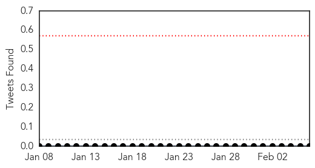

30 Day Trends
Web: 3 alerts, 0 warnings
Twitter: 0 alerts, 0 warnings
Top Articles:
- 0.998
- Puerto Rico Hit by 27,000 Chikungunya Cases Since May
- 0.994
- More travelers to Caribbean sickened by vicious virus
- 0.991
- Caribbean blues: Mosquito virus is sickening more travelers
- 0.982
- Caribbean blues: Mosquito virus is sickening more travellers - National
- 0.980
- Caribbean blues: More travellers returning with painful new mosquito virus, stumping doctors
- 0.978
- Mosquito virus chikungunya sickening travelers, spreading in Florida (w/video)
- 0.978
- Caribbean blues: Mosquito virus is sickening more travelers
- 0.965
- Caribbean Blues: Mosquito Virus Is Sickening More Travelers
- 0.965
- Caribbean Blues: Mosquito Virus Is Sickening More Travelers
Top Tweets:
-
No tweets found for Feb 06, 2015
Web/News Articles

Tweets
Article Locations